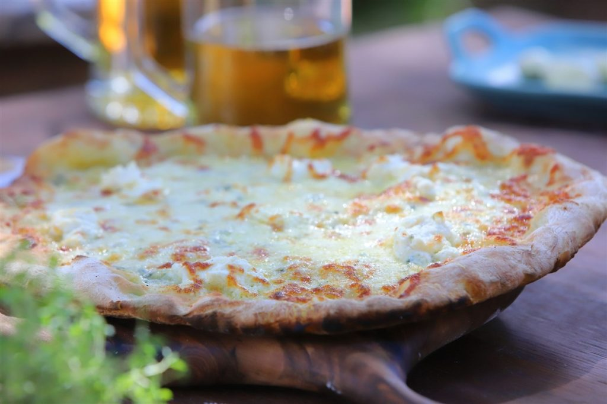

Pizza cuatro quesos

descripcion
Ingredientes:
Quesos:
- Queso azul 150 gramos
- Queso muzarella 250 gramos
- Queso parmesano 100 gramos
- Ricotta 200 gramos
Masa:
- Levadura: 20 grs.
- Manteca: 1 cda.
- Harina: 400 grs.
- Agua: 320 c.c.
- Sal: c/n.
Base:
- Sal y pimienta: c/n.
- Aceite de oliva: c/n
- Agua: 50 c.c.
- Crema de leche: 250 grs.
- Fecula de maiz: 15 gramos
- Ajo: 1 diente
- Manteca c/n
- Nuez moscada 1 pizca
- Queso rallado 50 gramos
Pasos:
Base:
- En una sartén con aceite de oliva y manteca saltear ajo picado sin que tome color.
- Agregar crema, sal, pimienta, nuez moscada, queso rallado y dejar reducir por 3 minutos.
- Añadir fécula de maíz disuelta en agua y llevar a hervor.
- Dejar espesar y reservar.
Masa:
- Disolver levadura fresca con un poco de agua tibia.
- Hacer una corona con harina y agregar sal.
- En el centro añadir la levadura, agua, manteca pomada y amasar hasta tomar la masa y formar un bollo.
- Dejar levar por 1 hora.
Pizza:
- Estirar la masa dándole forma (1/2 cm espesor) y colocar sobre pala para llevar al horno.
- Sobre la masa estirada colocar la crema espesa, parmesano rallado por encima, ricota desgranada, muzarella rallada y por último queso azul.
- Terminar con pimienta, aceite de oliva y llevar a horno fuerte de barro o piedra (250° C o más) por 5 minutos.